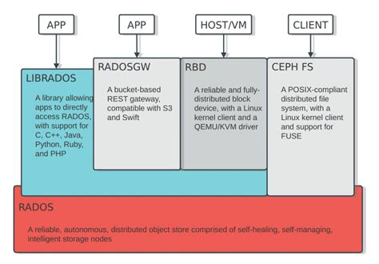

ceph
一个软件定义（SDS）、统一存储解决方案（大规模分布式文件系统），与其他分布式文件系统最大的区别就是采用的CRUSH算法，把数据的元信息分布到多台元信息服务器上(MDS)，没有单点瓶颈。
提供多种存储方案：
- 块存储： 一般为一大块存储空间，一般用于虚拟机等
- 对象存储： 一般为独立的文件，如视频图片数据等
- 文件系统存储： 兼容posix接口的文件系统
整体架构

ceph存储集群由几个不同的软件守护进程组成，每个守护进程负责Ceph的一个独特功能，每个守护进程彼此独立！
ceph 组件
- RADOS
可靠、自动、分布式对象存储（Reliable Autonomic Distributed Object Store，RADOS）是Ceph存储集群的基础。Ceph中的一切都以对象的形式存储，而RADOS就负责存储这些对象，而不考虑它们的数据类型。RADOS层确保数据一致性和可靠性。对于数据一致性，它执行数据复制、故障检测和恢复，还包括数据在集群节点间的迁移和再平衡。 - OSD
（对象存储设备，object storage device）是Ceph集群中存储实际用户数据并响应客户端读操作请求的唯一组件。通常，一个OSD守护进程与集群的一个物理磁盘绑定。所以，一般来说，物理磁盘的总数与Ceph集群中负责存储用户数据到每个物理磁盘的OSD守护进程数是相等的。 MON
Ceph monitor（MON）组件通过一系列的map来跟踪整个集群的健康状态，这些map是指下面几个组件的map：OSD、MON、PG和CRUSH。所有的集群节点都向monitor节点报告状态，并分享每一个状态变化的信息。一个monitor为每一个组件维护一个独立的map。monitor不存储实际数据，这是OSD的工作。- librados
是一种用来简化访问RADOS的方法，它目前支持PHP、Ruby、Java、Python、C和C++语言。它提供了Ceph存储集群的一个本地接口RADOS，并且是其他服务（如RBD、RGW）的基础，以及为CephFS提供POSIX接口。librados API支持直接访问RADOS，使得开发者能够创建自己的接口来访问Ceph集群存储。
- librados
RBD
Ceph块设备原来叫做RADOS块设备，它对外提供块存储，它可以被映射、格式化进而像其他磁盘一样挂载到服务器。Ceph块设备具备商业存储的特性，如精简制备和快照。RGW
Ceph对象网关也称为RADOS网关，它提供了一个兼容Amazon S3（Simple Storage Service）和OpenStack对象存储API（Swift）的restful API接口。RGW还支持多租户和OpenStack的Keystone身份验证服务。MDS
Ceph元数据服务器（MDS）跟踪文件层次结构并存储只供CephFS使用的元数据。Ceph块设备和RADOS网关不需要元数据，因此它们不需要Ceph MDS守护进程。MDS不直接给客户端提供数据，因此可以避免系统中的一个单点故障。CephFS
Ceph文件系统（CephFS）提供了一个任意大小且兼容POSIX的分布式文件系统。CephFS依赖Ceph MDS来跟踪文件层次结构，即元数据。目前CephFS不推荐在生产环境使用，但它已进入POC测试的候选序列。它的进展速度非常快，我们相信它很快就能在生产环境中使用了。
注意： 其中MDS，OSD,MON 是RADOS的底层组件，共同完成RADOS提供的功能！
各组件详细说明
Ceph 底层实现
对象
一个对象通常包含绑定在一起的数据和元数据，在整个集群中用一个全局唯一ID标识。
不同于文件，对象可根据元数据的大小变化来改变大小；允许用户管理和访问非结构数据（可分布于多台服务器）；可以不使用目录层次结构或者树状结构，使用一个很大的线性地址空间
CRUSH算法（Controlled Replication Under Scalable Hashing）
读写操作
客户端首先联系Ceph中monitor 并获取一个集群map副本。集群map帮助客户端获取Ceph集群的状态和配置信息。使用对象和池名 /ID 将数据转换为对象！然后将对象和PG（placement groups, 归置组）数一起经过散列来确定存储或获取数据所需的主OSD，计算完OSD ID之后，客户端直接连接OSD存储数据，存储完毕后，OSD所在的节点将执行CRUSH查找操作并计算辅助归置组和OSD的位置来实现数据复制，实现高可用！1
2
3
4
5
6
7
8
9
10
11participant 数据(名称obj1，池pool1) as data
participant PG(4.32) as pg
participant OSD1 as osd
participant OSD2 as osd2
participant OSD3 as osd3
data -> pg: hash(object_name) % PG_num
data -> pg: PoolID = 4;
pg -> osd: CRUSH(PG,Cluster State, rule)
osd -> osd3: 复制
osd -> osd2: 复制